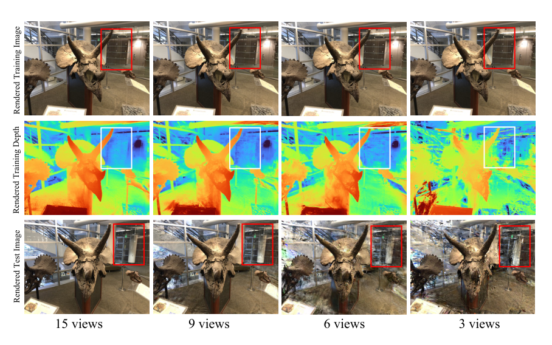
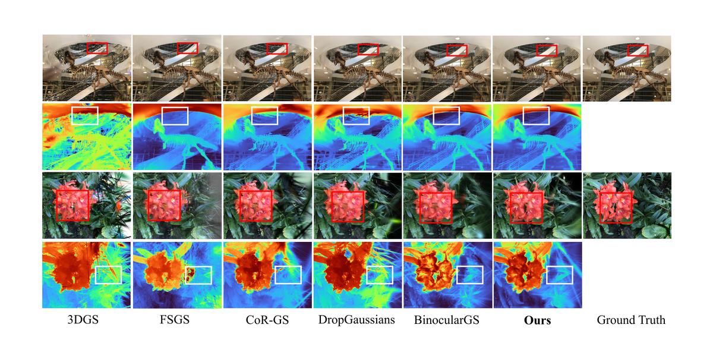
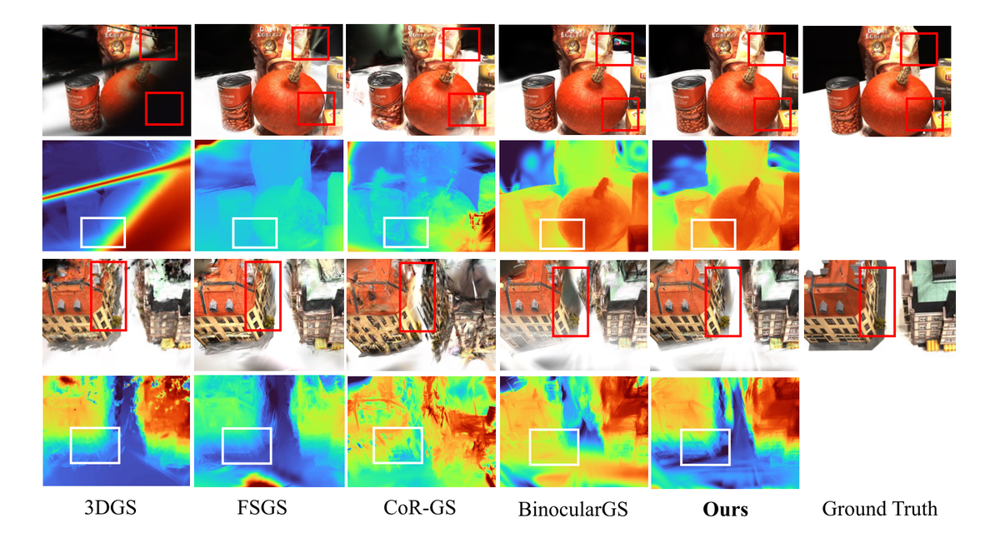
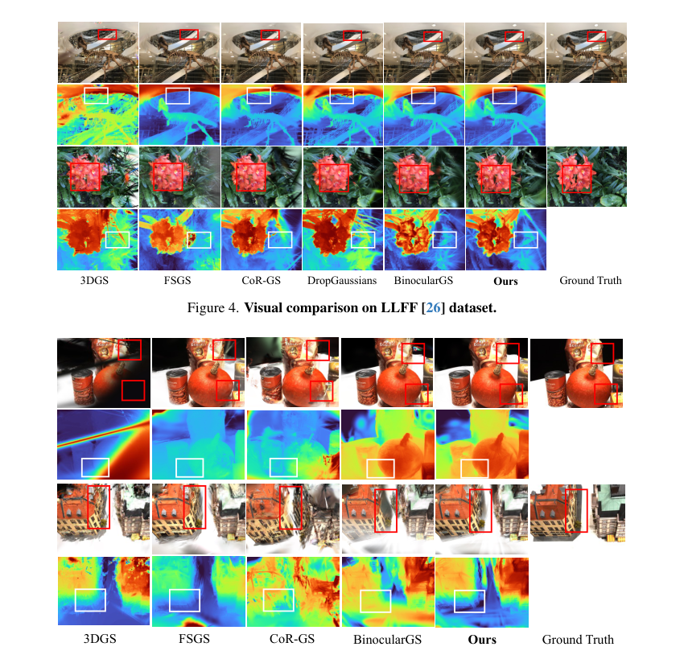
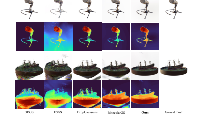

Intrinsic
简单摘要
LLFF、DTU 和 Blender 上的实验表明 ICO-GS 显着改善了几何形状和光度测量，始终优于现有的稀疏视图基线，特别是在具有挑战性的弱纹理区域。这些挑战在纹理较弱的区域尤其明显，在这些区域中，缺乏独特的外观线索进一步加剧了几何模糊性。

新颖的视图合成 (NVS) 见证了 3DGS 的显着进步，它将场景表示为各向异性 3D 高斯的集合，以实时速度实现照片级真实感渲染。这些挑战在纹理较弱的区域尤其明显，在这些区域中，缺乏独特的外观线索进一步加剧了几何模糊性。
核心创新
第一个关键新意是：然而，稀疏的观察结果会导致外观过度拟合和几何约束不足，从而导致严重的新颖视图伪影。这部分不是单独的小修小补，而是在原论文方法链路里承担了明确作用。
第二个关键新意是：我们的方法首先通过基于特征的多视图光度约束来规范几何形状，通过采用像素级顶部选择来处理遮挡和边缘感知平滑度以保留清晰的结构。这部分不是单独的小修小补，而是在原论文方法链路里承担了明确作用。
第三个关键新意是：在本节中，我们介绍 ICO-GS，这是一种稀疏视图重建方法，通过将几何正则化与外观优化相结合来增强内在一致性。这部分不是单独的小修小补，而是在原论文方法链路里承担了明确作用。
技术细节
在本节中，我们介绍 ICO-GS，这是一种稀疏视图重建方法，通过将几何正则化与外观优化相结合来增强内在一致性。完整的优化流程在 中描述。尽管在密集视图重建方面取得了成功，但 3DGS 在稀疏观测下严重过拟合。
我们利用（c）循环一致性深度过滤识别的几何可靠区域来合成虚拟视图。
3.1 动机
尽管在密集视图重建方面取得了成功，但 3DGS 在稀疏观测下严重过拟合。原则上，当高斯错位时，光度损失应该驱动优化器纠正其位置。优化器不是移动高斯，而是调整其颜色和不透明度来补偿几何误差，我们称之为外观补偿。

3.2 鲁棒几何正则化
BineyeGS 试图通过深度扭曲的虚拟视图强制立体一致性来解决这个问题。我们通过强大的几何正则化打破了这个循环，它根据渲染的深度在训练视图之间扭曲像素并惩罚不一致性。
3.2.1 多视角光度一致性
给定稀疏训练视图，我们的目标是通过多视图光度一致性来规范渲染的高斯深度。以一个参考视图及其对应的源视图为例，我们首先通过 alpha 混合渲染来渲染深度图。我们强制从源视图到参考视图进行反向扭曲，以获取重建的参考图像，并使用指示扭曲期间有效投影像素的二进制有效性掩模。
$$ p'_{j} = KT_{0 arrow j}(D_{0}(p) \cdot K^{-1} p), $$
这条式子是在定义一个可直接计算的中间量：右侧把相对位置、方向、权重或比例关系组合起来，左侧则把这个组合结果记成后续模块要反复使用的变量。
$$ L = \frac{1}{n-1} \sum_{j=1}^{n-1} \frac {\| (I_{j arrow 0} - I_{\text{0}}) \odot M_j \|_1} {\| M_j \|_1}. $$
放在“方法”这一部分看，它重点在定义或约束 L 这一项。这条式子描述了多个分量的聚合或逐步合成过程。它通常表示模型如何把局部贡献、概率权重或多项损失累积成最终结果。
$$ L = \frac{1}{n-1} \sum_{j=1}^{n-1} \frac {\| \frac{1}{2}(1 - \cos(\mathcal{F}_{\text{0}}, \mathcal{F}_{j arrow 0 } ) ) \odot M_j \|_1} {\| M_j \|_1}, $$
放在“方法”这一部分看，这条式子重点定义了 L 这一中间量。这条式子本质上是在对多个候选贡献做归一化聚合，最后得到稳定的 L，避免某一项因为尺度过大而主导结果。
$$ \begin{aligned} \mathcal{T}_k(p) = \underset{\substack{S \subset \{1,\ldots,n-1\} \\ |S|=k}}{\arg\min} \sum_{j \in S} \| \frac{1}{2}(1 - \cos(\mathcal{F}_{\text{0}}(p), \mathcal{F}_{j arrow 0}(p)) ) \|_1. \end{aligned} $$
这条式子描述了多个分量的聚合或逐步合成过程。它通常表示模型如何把局部贡献、概率权重或多项损失累积成最终结果。
$$ \mathcal{L}_{\text{mpc}}^{\text{Fea}}(p) = \frac{1}{k} \sum_{j \in \mathcal{T}_k(p)} \| \frac{1}{2} (1 - \cos(\mathcal{F}_{\text{0}}(p), \mathcal{F}_{j arrow 0}(p)) ) \|_1. $$
这条式子给出了噪声预测训练目标：模型在随机时间步接收带噪输入和条件信息，然后尽量把真实噪声估计准确。训练好这一项之后，反向采样时才能稳定地把噪声状态一步步拉回真实场景分布。
3.2.2 边缘感知深度平滑度
在仅从一个视图可见的区域中，多视图光度一致性无法提供足够的几何约束。因此，我们通过边缘感知深度平滑度来规范这些欠约束区域。其中 和 分别表示深度和图像梯度，并控制边缘敏感度。
$$ \mathcal{L}_{\text{smooth}} = \sum_{p} \| \nabla D_{\text{0}}(p) \|_1 \cdot \exp( -\alpha \| \nabla I_{\text{0}}(p) \|_1 ), $$
放在“方法”这一部分看，它重点在定义或约束 L smooth 这一项。这条式子给出了噪声预测训练目标：模型在随机时间步接收带噪输入和条件信息，然后尽量把真实噪声估计准确。训练好这一项之后，反向采样时才能稳定地把噪声状态一步步拉回真实场景分布。
3.3 几何引导的外观优化
我们建议通过虚拟视图采样利用正则化几何来进行外观优化。现有方法渲染虚拟新颖视图，以减轻稀疏设置中的纹理约束不足，通过单目或双目深度一致性强制正则化。单目深度的尺度模糊性、MVS 先验中的噪声以及渲染深度不准确的多样性受限。
3.3.1 循环一致性深度过滤
为了确保几何可靠性，我们在合成虚拟视图之前通过循环一致性过滤来验证渲染深度。给定参考视图、源视图、相机内在、相对变换和高斯喷射的渲染深度图，我们执行向前向后扭曲。该二进制掩码可识别通过循环一致性验证渲染深度的区域，确保后续变形产生与真实场景结构对齐的视图。
$$ p''_j = KT^{-1}_{0 arrow j}D_j(p'_{j})K^{-1}p'_{j}. $$
放在“方法”这一部分看，它重点在定义或约束 p'' j 这一项。这条式子是在定义一个可直接计算的中间量：右侧把相对位置、方向、权重或比例关系组合起来，左侧则把这个组合结果记成后续模块要反复使用的变量。
$$ e_j(p) = | D_{\text{0}}(p) - \tilde{D}_j(p) |. $$
这条式子是在定义一个可直接计算的中间量：右侧把相对位置、方向、权重或比例关系组合起来，左侧则把这个组合结果记成后续模块要反复使用的变量。
$$ \mathcal{M}_{\text{reliable}}(p) = \mathbb{I}[ \sum_{j=1}^{n-1} \mathbb{I}[e_j(p) < \tau_d] \geq m ], $$
这条式子描述了多个分量的聚合或逐步合成过程。它通常表示模型如何把局部贡献、概率权重或多项损失累积成最终结果。
3.3.2 虚拟视图光度一致性
通过确定可靠的深度，我们可以通过虚拟视图光度一致性将精确的几何形状传播到看不见的外观。对于每个虚拟视图，我们渲染高斯以从虚拟姿势获取渲染的虚拟图像，并在有效像素上强制光度一致性。它提供了额外的观察结果，以优化未见视图中的外观并防止过度拟合，相反，它通过新视角的监督来约束几何图形。

| Methods | PSNR↑ | SSIM↑ | LPIPS↓ | ||||||
|---|---|---|---|---|---|---|---|---|---|
| 2-10 | 3-view | 6-view | 9-view | 3-view | 6-view | 9-view | 3-view | 6-view | 9-view |
| DietNeRF | 14.94 | 21.75 | 24.28 | 0.370 | 0.717 | 0.801 | 0.496 | 0.248 | 0.183 |
| RegNeRF | 19.08 | 23.10 | 24.86 | 0.587 | 0.760 | 0.820 | 0.336 | 0.206 | 0.161 |
| FreeNeRF | 19.63 | 23.73 | 25.13 | 0.612 | 0.779 | 0.827 | 0.308 | 0.195 | 0.160 |
| SparseNeRF | 19.86 | 23.26 | 24.27 | 0.714 | 0.741 | 0.781 | 0.243 | 0.235 | 0.228 |
| 3DGS | 15.52 | 19.45 | 21.13 | 0.405 | 0.627 | 0.715 | 0.408 | 0.268 | 0.214 |
| FSGS | 20.31 | 24.20 | 25.32 | 0.652 | 0.811 | 0.856 | 0.288 | 0.173 | 0.136 |
| DNGaussian | 19.12 | 22.18 | 23.17 | 0.591 | 0.755 | 0.788 | 0.294 | 0.198 | 0.180 |
| CoR-GS | 20.45 | 24.49 | 26.06 | 0.712 | 0.837 | 0.874 | 0.196 | 0.115 | thirdplace0.089 |
$$ L_{app} = \sum_{p \in \mathcal{M}_{\text{v}}} \| \mathcal{I}_{v}(p) - \mathcal{I}_{v}^{R}(p) \|_1. $$
放在“方法”这一部分看，它重点在定义或约束 L app 这一项。这条式子是在定义一个可直接计算的中间量：右侧把相对位置、方向、权重或比例关系组合起来，左侧则把这个组合结果记成后续模块要反复使用的变量。
3.4 整体管线
我们通过课程学习整合几何正则化和几何引导的外观优化。其中 是基本光度损失，强制从基线继承的双眼一致性，强制几何正则化（亚秒：几何），并优化未见视图中的外观（亚秒：外观）。
实验结论
实验部分主要围绕 数据集我们在三个标准基准上进行实验 展开。结果表明，几何正则化从 LLFF/DTU 的迭代 20k 开始，Blender 的迭代 4k 开始，而几何引导的外观优化分别从迭代 25k 和 5k 开始。
虽然 SSIM 和 LPIPS 略低于某些方法，但这种权衡反映了我们优先考虑几何精度而不是感知优化。
| Methods | PSNR↑ | SSIM↑ | LPIPS↓ | ||||||
|---|---|---|---|---|---|---|---|---|---|
| 2-10 | 3-view | 6-view | 9-view | 3-view | 6-view | 9-view | 3-view | 6-view | 9-view |
| DietNeRF | 11.85 | 20.63 | 23.83 | 0.633 | 0.778 | 0.823 | 0.214 | 0.201 | 0.173 |
| RegNeRF | 18.89 | 22.20 | 24.93 | 0.745 | 0.841 | 0.884 | 0.190 | 0.117 | thirdplace0.089 |
| FreeNeRF | 19.52 | 23.25 | 25.38 | 0.787 | 0.844 | 0.888 | 0.173 | 0.131 | 0.102 |
| SparseNeRF | 19.47 | - | - | 0.829 | - | - | 0.183 | - | - |
| 3DGS | 10.99 | 20.33 | 22.90 | 0.585 | 0.776 | 0.816 | 0.313 | 0.223 | 0.173 |
| FSGS | 17.34 | 21.55 | 24.33 | 0.818 | thirdplace0.880 | thirdplace0.911 | 0.169 | 0.127 | 0.106 |
| DNGaussian | 18.91 | 22.10 | 23.94 | 0.790 | 0.851 | 0.887 | 0.176 | 0.148 | 0.131 |
| CoR-GS | 19.21 | secondplace24.51 | secondplace27.18 | 0.853 | secondplace0.917 | secondplace0.947 | 0.119 | secondplace0.068 | firstplace0.045 |

4.1 数据集
实验部分主要围绕 我们在三个标准基准上进行实验 展开。结果表明，LLFF 用于前向场景，DTU 是一个具有广泛弱纹理区域的具有挑战性的数据集，用于以对象为中心的捕获，Blender 用于 360° 以对象为中心的场景。
4.2 实施细节
实验部分主要围绕 我们建立在 BineyeGS 框架的基础上，为 LLFF 和 DTU 提供密集点云初始化，并为 Blender 进行随机初始化 展开。结果表明，我们在 LLFF 和 DTU 数据集上训练 30k 次迭代，在 Blender 上训练 7k 次迭代，与基线一致。

| Methods | PSNR | SSIM | LPIPS |
|---|---|---|---|
| DietNeRF | 22.50 | 0.823 | 0.124 |
| RegNeRF | 23.86 | 0.852 | 0.105 |
| FreeNeRF | 24.26 | 0.883 | 0.098 |
| SparseNeRF | 22.41 | 0.861 | 0.199 |
| 3DGS | 22.23 | 0.858 | 0.114 |
| FSGS | 22.76 | 0.829 | 0.157 |
| DNGaussian | 24.31 | 0.886 | secondplace0.088 |
| CoR-GS | 23.98 | secondplace0.891 | 0.094 |
| BinocularGS | thirdplace24.71 | 0.872 | 0.101 |
4.3 基线
实验部分主要围绕 我们将 NeRF 和 3D 高斯泼溅 (3DGS) 范式的最先进方法进行比较 展开。结果表明，对于基于 NeRF 的方法，我们包括 DietNeRF 、 RegNeRF 、 FreeNeRF 和 SparseNeRF。
4.4 比较
实验部分主要围绕 我们的方法在所有视图设置中实现了最先进的性能 展开。结果表明，3 个视图时提高了 0.76 dB，6 个视图时比 ComapGS 提高了 0.17 dB，9 个视图时的性能具有竞争力（比第三名提高了 0.24 dB）。
4.5 分析
实验部分主要围绕 如图所示，这会导致 RGB 和深度出现明显的模糊和噪声，这证实了稳健的几何正则化至关重要 展开。结果表明，我们认为，考虑到稀疏视图下渲染质量和几何精度的提高，这些成本是可以接受的。

| L_mpc^Fea | L_smooth | CCDF | L_app | LLFF(3-view) | DTU(3-view) | ||||
|---|---|---|---|---|---|---|---|---|---|
| (lr)5-7 (lr)8-10 | PSNR | SSIM | LPIPS | PSNR | SSIM | LPIPS | |||
| 21.44 | 0.751 | 0.168 | 20.71 | 0.862 | 0.111 | ||||
| 21.82 | 0.761 | 0.165 | 21.31 | 0.883 | 0.099 | ||||
| 22.16 | 0.775 | 0.159 | 21.67 | 0.879 | 0.093 | ||||
| 21.86 | 0.767 | 0.162 | 21.25 | 0.875 | 0.104 | ||||
| 21.79 | 0.763 | 0.164 | 21.20 | 0.870 | 0.105 | ||||
| 22.20 | 0.778 | 0.157 | 21.77 | 0.888 | 0.092 | ||||
理解评价
如果把这篇论文放回问题背景里看，它真正的价值在于：3D 高斯泼溅 (3DGS) 通过具有耦合内在属性的基元表示场景。这说明作者不是只补一个局部模块，而是在重新组织问题该怎样被解决。
最能支撑这个判断的，还是实验给出的证据：LLFF、DTU 和 Blender 上的实验表明 ICO-GS 显着改善了几何形状和光度测量，始终优于现有的稀疏视图基线，特别是在具有挑战性的弱纹理区域。换句话说，这些设计并不只是概念上更完整，而是实实在在改变了最终结果。
当然，它离真正成熟的方案还有距离：当前方案的局限在于它仍然受制于计算资源、输入质量或场景复杂度，距离真正稳健的大规模部署还有差距。后续更值得继续推进的方向，是 后续更值得继续推进的方向，是未来继续提升效率、泛化能力以及在更复杂场景下的稳定性。